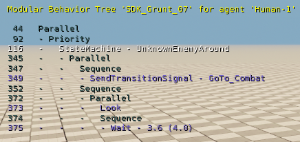
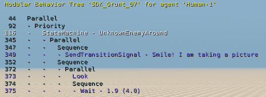
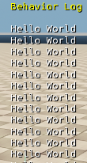

Обзор
На этой странице представлены инструкции по созданию и реализации узлов дерева пользовательского поведения; как объясняется в следующем разделе, эти узлы могут быть трех типов, а именно: «Действие», «Композиты» или «Декораторы».
Базовый класс
Узлы действий
Узлы действий представляют собой конечные узлы в дереве поведения и отвечают за выполнение агентом AI определенного действия, такого как перемещение между локациями, произнесение диалога или воспроизведение анимации.
// New Action node.
class MyNewActionNode : public BehaviorTree::Action
{
typedef BehaviorTree::Action BaseClass;
// ...
}; Составные узлы
Составные узлы имеют несколько дочерних узлов, которые выполняются в соответствии с определенной политикой/стратегией.
// New Composite node.
class MyNewCompositeNode : public BehaviorTree::CompositeWithChildLoader
{
typedef BehaviorTree::CompositeWithChildLoader BaseClass;
// ...
}; Узлы-декораторы
У узла Decorator есть только один дочерний узел, к которому он добавляет дополнительную функциональность независимо от того, что делает дочерний узел.
// New Composite node.
class MyNewDecoratorNode : public BehaviorTree::Decorator
{
typedef BehaviorTree::Decorator BaseClass;
// ...
}; Интерфейс
Для правильной работы все узлы, независимо от их типа, должны иметь несколько определенных основных функций; они описаны ниже.
// MyNewActionNode.h
// Although we're creating an Action node, the syntax would be the same for a Decorator or a Composite node as well.
class MyNewActionNode : public BehaviorTree::Action
{
typedef BehaviorTree::Action BaseClass;
public:
// Action (or Decorator or Composite).
//! Called before the first call to Update.
virtual void OnInitialize(const BehaviorTree::UpdateContext& context) override;
//! Called when a node is being terminated (Terminate was called).
//! This can happen in the following cases:
//! a) The node returns Success/Failure in Update.
//! b) Another node causes this node to Terminate while this node was running.
virtual void OnTerminate(const BehaviorTree::UpdateContext& context) override;
//! Do your node's work here.
//! - Note that OnInitialize will have been automatically called for you before you get your first update.
//! - If you return Success or Failure the node will automatically get OnTerminate called on itself.
//! - If you return Running the node will keep running and it will be executed again the next frame.
virtual BehaviorTree::Status Update(const BehaviorTree::UpdateContext& context) override;
//! Load up a behavior tree node with information from an XML node.
virtual BehaviorTree::LoadResult LoadFromXml(const XmlNodeRef& xml, struct BehaviorTree::LoadContext& context) override;
#ifdef USING_BEHAVIOR_TREE_XML_DESCRIPTION_CREATION
//! Save behavior tree node information in an XML node. Opposite of LoadFromXML.
//! Saved information that is saved here should be read back when calling LoadFromXML and vice versa
virtual XmlNodeRef CreateXmlDescription() override;
#endif // USING_BEHAVIOR_TREE_XML_DESCRIPTION_CREATION
#ifdef USING_BEHAVIOR_TREE_SERIALIZATION
//! Serialize node data to be shown in the Interim Editor.
//! All properties that are saved/loaded in the XML should be accessible (somehow) from the Editor.
virtual void Serialize(Serialization::IArchive& archive) override;
#endif // USING_BEHAVIOR_TREE_SERIALIZATION
#ifdef DEBUG_MODULAR_BEHAVIOR_TREE
// ! Information to be shown in the screen when Debug Tree (or cvar ai_ModularBehaviorTreeDebugTree) is enabled
virtual void GetCustomDebugText(const UpdateContext& updateContext, stack_string& debugText) const override;
#endif // DEBUG_MODULAR_BEHAVIOR_TREE
// ~Action (or Decorator or Composite).
private:
// Only for Composite nodes.
// This function determines how the Node will handle an Event.
// A specific implementation for Composite nodes is required because we have to specify how the children will handle the event.
virtual void HandleEvent(const EventContext& context, const Event& event) override;
// Node data - member variables if required.
}; Данные узла
Как описано на предыдущая страницаДеревья поведения содержат как данные конфигурации, так и данные времени выполнения.
- Данные конфигурации хранятся как данные-члены класса узла.
- Данные времени выполнения хранятся в RuntimeData struct. Каждый узел должен иметь RuntimeData struct определяется независимо от того, используется он или нет; Таким образом, struct можно даже оставить пустым. Если не пусто, struct:
- Должен быть инициализирован в OnInitialize функция узла.
- Должно быть очищено в OnTerminate функция узла.
- Следует обновить в Обновить функция узла.
- Можно получить, позвонив по номеру GetRuntimeData(контекст) функция.
// Simplified version of the Timeout node to be used as an example.
class Timeout: public BehaviorTree::Action
{
typedef BehaviorTree::Action BaseClass;
public:
// It's mandatory to have one although it may be empty.
// Runtime node data.
struct RuntimeData
{
Timer timer;
};
Timeout()
: m_duration(0.0f)
{
}
virtual void OnInitialize(const UpdateContext& context) override
{
RuntimeData& runtimeData = GetRuntimeData<RuntimeData>(context);
runtimeData.timer.Reset(m_duration);
}
virtual Status Update(const UpdateContext& context) override
{
RuntimeData& runtimeData = GetRuntimeData<RuntimeData>(context);
return runtimeData.timer.Elapsed() ? Failure : Running;
}
// ...
private:
// Configuration data.
// While editing, we set how much the timer should last.
float m_duration;
}; Реализация
Выполнение узла
Следующие функции выполняются в различных обстоятельствах, когда узел дерева поведения активен.
// MyNewActionNode.cpp
void MyNewActionNode::OnInitialize(const BehaviorTree::UpdateContext& context)
{
BaseClass::OnInitialize(context);
// Specific OnInitializenode code.
}
void MyNewActionNode::OnTerminate(const BehaviorTree::UpdateContext& context)
{
// Specific OnTerminate node code.
BaseClass::OnTerminate(context);
}
BehaviorTree::Status MyNewActionNode::Update(const BehaviorTree::UpdateContext& context)
{
// Do your work.
// Return
// Success if you finished your work successfully.
// Failure if you finished your work unsuccessfully.
// Running if you didn't finish your work yet and execution will last more than one frame.
}
Все узлы также требуют HandleEvent функция.
Действия и декораторы имеют реализацию этой функции по умолчанию; это связано с тем, что узлы действий не имеют дочерних элементов, а декораторы имеют только одного, что делает реализацию в этом случае тривиальной.
Однако составные узлы могут иметь несколько дочерних узлов, которые могут быть активны в разных ситуациях и, следовательно, требуют специальной реализации для HandleEvent функция. Эти составные узлы должны знать, как обрабатывать событие и как передавать его дочерним элементам.
// (Simplified) Handle event implementation for a Sequence.
void Sequence::HandleEvent(const EventContext& context, const Event& event)
{
// Only propagate the event to the currently active child.
RuntimeData& runtimeData = GetRuntimeData<RuntimeData>(context);
m_children[runtimeData.currentChildIndex]->SendEvent(context, event);
}Служебные функции
LoadFromXml
Поскольку деревья поведения на CRYENGINE описаны в XML, необходимо реализовать определенные функции для их загрузки и сохранения с диска.
Например, вот что такое упрощенная форма LoadFromXml функция SendEvent Узел действия выглядит так. Поскольку LoadFromXml выполняется при загрузке дерева поведения из файла, эта функция является обязательной.
// Simplified LoadFromXml of the SendEvent action node.
BehaviorTree::LoadResult MyNewActionNode::LoadFromXml(const XmlNodeRef& xml, struct BehaviorTree::LoadContext& context)
{
// Always.
IF_UNLIKELY (BaseClass::LoadFromXml(node, context) == LoadFailure)
{
return LoadFailure;
}
// Specific LoadFromXml node code.
//Get the name attribute from XML and initialize the m_eventToSend data member.
const stack_string eventName = xml->getAttr("name");
m_eventToSend = Event(eventName);
return LoadSuccess;
}Узнайте больше о чтении и письме XML с помощью CRYNENGINE. здесь.
Ошибки
Об ошибках при сохранении/загрузке файлов XML можно сообщить с помощью средства сообщения об ошибках или позвонив BehaviorTree: ErrorReporter для заранее определенных сообщений об ошибках.
string BehaviorTree::ErrorReporter::ErrorMessageMissingOrEmptyAttribute(const string& tag, const string& fieldMissing)
string BehaviorTree::ErrorReporter::ErrorMessageInvalidAttribute(const string& tag, const string& invalidField, const string& providedInvalidValue, const string& reason)
string BehaviorTree::ErrorReporter::ErrorMessageTooManyChildren(const string& tag, const int currentChildCount, const int maxSupportedChildren)Эти сообщения можно использовать следующим образом:
// Simplified LoadFromXml of the SendEvent action node with error reporting.
BehaviorTree::LoadResult MyNewActionNode::LoadFromXml(const XmlNodeRef& xml, struct BehaviorTree::LoadContext& context)
{
// Always
IF_UNLIKELY (BaseClass::LoadFromXml(node, context) == LoadFailure)
{
return LoadFailure;
}
// Specific LoadFromXml node code.
// Check if XML contains an attribute 'name'.
if (!xml->haveAttr("name"))
{
// Use error reported.
ErrorReporter(*this, context).LogError(ErrorReporter::ErrorMessageMissingOrEmptyAttribute("SendEvent","name"));
return LoadFailure;
}
const stack_string eventName = xml->getAttr("name");
m_eventToSend = Event(eventName);
return LoadSuccess;
}CreateXmlDescription
Вот упрощенная форма CreateXmlDescription функция для того же узла. В отличие от LoadFromXml функция, CreateXmlDescriptionis необязательно; это требуется только тогда, когда мы хотим использовать узел в редакторе дерева поведения.
CreateXmlDescription выполняется, когда дерево сохраняется и записывается в файл.
// Simplified CreateXmlDescription of the SendEvent action node.
#ifdef USING_BEHAVIOR_TREE_XML_DESCRIPTION_CREATION
virtual XmlNodeRef CreateXmlDescription() override
{
XmlNodeRef xml = BaseClass::CreateXmlDescription();
xml->setTag("SendEvent");
xml->setAttr("name", m_eventToSend.GetName());
return xml;
}
#endif // USING_BEHAVIOR_TREE_XML_DESCRIPTION_CREATIONСериализация
Узлы дерева поведения используют библиотеку Yasli для сериализации, поэтому для них требуется реализация функции сериализации. Сериализация узлов работает так же, как и в других модулях.
Дополнительная информация о CRYENGINE Библиотека сериализации можно найти здесь.
#ifdef USING_BEHAVIOR_TREE_SERIALIZATION
virtual void MyNewActionNode::Serialize(Serialization::IArchive& archive)
{
// Specific Serialize node code.
archive(m_float, "float", "^Float");
//...
BaseClass::Serialize(archive);
}
#endif // USING_BEHAVIOR_TREE_SERIALIZATIONДанные через контекст
Иногда при сериализации узла необходимо иметь доступ к данным дерева поведения. Этого можно достичь посредством тот archive.context собственность Архива.
#ifdef USING_BEHAVIOR_TREE_SERIALIZATION
virtual void MyNewActionNode::Serialize(Serialization::IArchive& archive)
{
// Get some data through archive context.
const BehaviorTree::Timestamps* timestamps = archive.context<BehaviorTree::Timestamps>();
const Variables::Declarations* variablesDeclaration = archive.context<Variables::Declarations>();
const Variables::EventsDeclaration* eventsDeclaration = archive.context<Variables::EventsDeclaration>();
//...
BaseClass::Serialize(archive);
}
#endif // USING_BEHAVIOR_TREE_SERIALIZATIONОшибки
Об ошибках в процессе сериализации можно сообщить, позвонив archive.error и использование заранее определенных сообщений об ошибках в SerializationUtils:Сообщения.
// When the node child is empty.
string SerializationUtils::MessagesErrorEmptyHierachy(const string& childType)
// When the field is empty.
string SerializationUtils::MessagesErrorEmptyValue(const string& fieldName)
// When the field with the same value is duplicated.
string SerializationUtils::MessagesErrorDuplicatedValue(const string& fieldName, const string& duplicatedValue)
// When the field has an invalid value. A reason must be specified.
string SerializationUtils::MessagesErrorInvalidValueWithReason(const string& fieldName, const string& providedInvalidValue, const string& reason)Эти сообщения можно использовать следующим образом:
#ifdef USING_BEHAVIOR_TREE_SERIALIZATION
virtual void MyNewActionNode::Serialize(Serialization::IArchive& archive)
{
// Specific Serialize node code
archive(m_positiveFloat, "positiveFloat", "^Positive Float");
archive.doc("The money the Agent has");
if (m_positiveFloat < 0)
{
archive.error(m_positiveFloat , SerializationUtils::Messages::ErrorInvalidValueWithReason("Positive Float", ToString(m_positiveFloat ), "Value must be greater or equals 0"));
}
//...
BaseClass::Serialize(archive);
}
#endif // USING_BEHAVIOR_TREE_SERIALIZATIONGetCustomDebugText
GetCustomDebugText Функция имеет выходную строку, в которой хранится то, что должно отображаться на экране во время отладки дерева поведения. Например, следующий фрагмент кода принадлежит SendTransitionSignal Узел действия.
Отладка в реальном времени включается через редактор дерева поведения. Меню отладки.
// SendTransitionSignal DebugCustomText
#ifdef DEBUG_MODULAR_BEHAVIOR_TREE
// ! Information to be shown in the screen when Debug Tree (or cvar ai_ModularBehaviorTreeDebugTree) is enabled.
virtual void GetCustomDebugText(const UpdateContext& updateContext, stack_string& debugText) const override
{
debugText = m_signalName;
// The following is a custom line added to illustrate usage of the GetCustomDebugText function.
// debugText = "Smile! I am taking a picture";
}
#endif // DEBUG_MODULAR_BEHAVIOR_TREEВ игре приведенный выше код создаст следующий отладочный текст, в котором SendTransitionSignal узел отображает значение m_signalName, который GoTo_Combat.

debugText=m_signalName
Когда debugText ="Улыбайтесь! Я фотографирую" строка используется в приведенном выше коде, SendTransitionSignal node отображает пользовательский текст отладки, как показано.

debugText=Улыбайтесь! я фотографирую
Использовать журнал отладки
Сообщения можно записать в журнал дерева поведения, открыв UpdateContext параметр из любой из основных функций выполнения (OnInitialize, Обновить и OnTerminate), описанный в Пользовательские узлы документация. Это будет выглядеть следующим образом:
Status Update(const UpdateContext& context)
{
context.behaviorLog.AddMessage("Hello World");
// Some other logic.
}Приведенный выше код записывает Привет, мир сообщение в журнал отладки каждый раз, когда узел выполняет Обновить функция. Во время игры это сообщение будет отображаться на экране, как показано ниже, если Отладка → Показать журнал Опция включена в главном меню редактора дерева поведения.

Привет, мир
Регистрация узлов
Созданные узлы необходимо зарегистрировать, прежде чем их можно будет использовать в дереве поведения.
Это делается через REGISTER_BEHAVIOR_TREE_NODE_WITH_SERIALIZATION(1, 2, 3, 4) макрос где:
- 1 соответствует менеджеру дерева поведения (доступен через gEnv или gAIEnv);
- 2 соответствует классу нового узла, который необходимо добавить;
- 3 относится к пути узла в меню;
- 4 соответствует цвету узла.
Рекомендуется создать функцию для регистрации всех пользовательских узлов следующим образом:
// From your Game code, you need to call this function
void RegisterBehaviorTreeNodes_Custom()
{
BehaviorTree::IBehaviorTreeManager& manager = gEnv->pAISystem->GetIBehaviorTreeManager();
CRY_ASSERT(manager);
const char* COLOR_GAME = "ff00ff";
REGISTER_BEHAVIOR_TREE_NODE_WITH_SERIALIZATION(manager, MyNewActionNode, "Game\\Custom\\Actions", COLOR_GAME );
REGISTER_BEHAVIOR_TREE_NODE_WITH_SERIALIZATION(manager, MyNewDecoratorNode, "Game\\Custom\\Decorators", COLOR_GAME );
REGISTER_BEHAVIOR_TREE_NODE_WITH_SERIALIZATION(manager, MyNewSpecialNode, "Game\\Other", COLOR_GAME );
//...
}